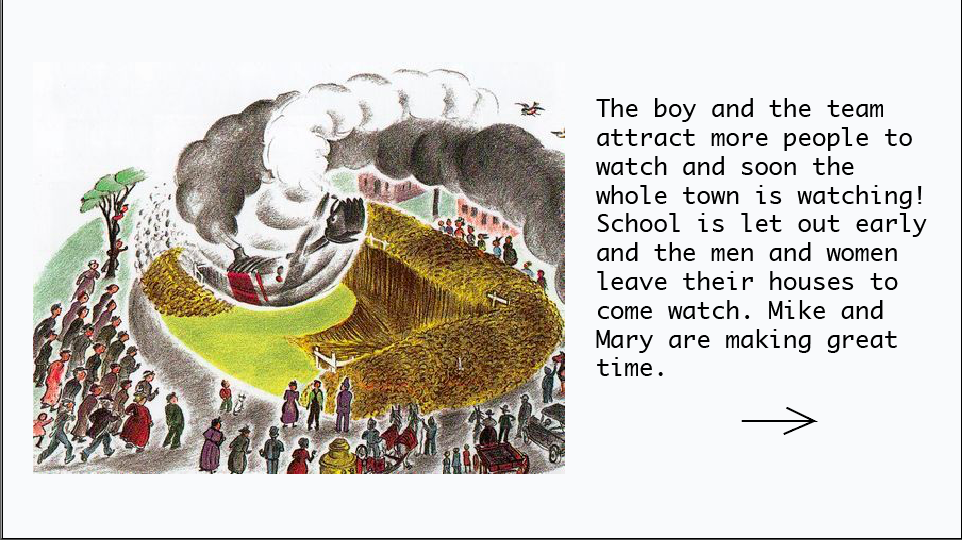

Project 2 Part 2
Pseudocode
- If user presses wrong answer, a red tint comes on the screen and after the scenario occurs the “wasted sign” with the sound from GTA 5 comes up
- Div with the text goes to a different div with the same font just a darker red color type instead of the default font color
- If certain button is pressed to signify wrong choice, there is a div where the “wasted” font which is much bigger than the other fonts will activate.
- I think you would ps5j for this
- If there is also a way to make it get bigger and whiter
- When you press the wrong button background tint changes to red
- If the user presses the wrong answer, after the wasted signs up a screen with two options will come up it will say this this
- Would you like to “Go Back” or “Restart”
- This will occur through a new div called “decision” popping up
- Within this div are two text boxes with buttons that take you to seperate links
- As soon as the previous button is pressed:
- Its lets reader read the consequence for 5 seconds, followed by the wasted sign, then the “Decision” div will come on and give the option for two seperate links. So maybe the div is activated by the actions of the other div. Aka lets the wasted thing fade in.
- The link will revert back to previous pages
- If the User Chooses “Go back” the background of the previous page will fade in and the reddish tint will fade out
- Go back button will activate the background color to change of the current div it is in.
- The divs holding information about the text and illustrations will also disappear
- As soon as this button is pressed I imagine the viewable box that holds go back will disappear and will then have the red before going back to the link of the page
- If the User chooses “Restart” The screen with the options and the waster will revert to white like you are going to heaven and some holy music will play. It will then take you to the start of the game where there is fade from white into the title screen.
- As soon as restart is pressed the physical box holding “decisions” will disappear
- Behind this div will still be the div holding the “wasted” div, as well as the divs holding the text and background color that have now been changed to a red tint
- When the “decisions” box disappears, the color of screen behind it as well as the text will go to white
- The divs holding the animations will also turn to white
- It will have few a seconds of white before taking you back to the home screen
- If they press the right button. It simply takes the person a newly designed page.
- Within the clickable link, it will just take them to the next page. No tricky animations or transitions needed
Disclaimer: All this pseudocode is assuming that you can do some type of delays between actions or stuff like that
Mockups

Diagrams/Wireframes